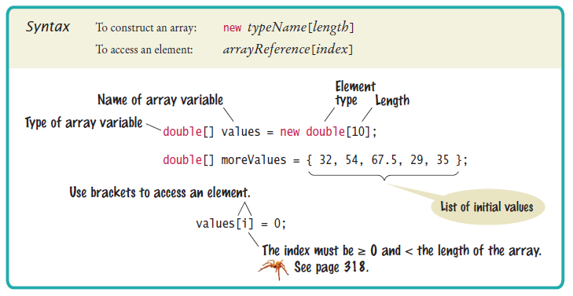

Sprint 1
Sprint backlog
- US-PRG-O1: Variabelen, datatypes en operatoren
- US-PRG-O2: Conditionele statements
- US-PRG-O3: Iteratie statements
- US-PRG-O4: Array en ArrayList
- US-PRG-O5: Math class (extraatje)
(Huis)werk
- Alle oefeningen/quizzes/opdrachten van hoofdstuk 2, 3, 4, 5, 10
Inleveropdracht
- Oefening 1 - 6 op pagina "Inleveropdracht" op cum laude
Variabelen, datatypes en operatoren
Variabelen
- Containers die data vasthouden.
- Variabelen hebben een naam en een waarde.
- Tijdelijk data opslaan in Java.
- Kan oneindig vaak aangepast worden.
Voorbeelden
public class Main {
public static void main(String[] args) {
int age = 22;
String name = "Robbe";
char gender = "m";
float averageScore = 7,6f;
}
}
Datatypes
- Java is statisch en sterk getypt
-
2 soorten datatypes
- Primitieve datatypes
- Niet primitieve datatypes
Primitieve datatypes
- boolean: true of false
- byte: getal -128 tot 127
- char: karakter
- short: getal van 16-bit
- int: getal van 32-bit
- long: getal van 64-bit
- float: kommagetal van 32-bit
- double: kommagetal van 64-bit
Niet primitieve datatypes
- String: woorden, teksten, sequency van karakters
Operatoren
- Functies uitvoeren
-
3 groepen
- Rekenkundige functies
- Logische functies
- Relationele functies
Rekenkundige functies
- (+, -, *, /, %)
- Uitvoeren van wiskundige vergelijkingen
Rekenkundige functies
- || = of-poort
- && = en-poort
- ! = niet-poort
Relationele functies
- (<, >, ==, <=, >=)
- Variabelen vergelijken tov elkaar
Conditionele statements
If - Else statement
- Beïnvloeden van de uitvoering van programma
- Ook wel bekend als boolean expressions
- If block uitgevoerd bij true
- Else block uitgevoerd bij false
Voorbeeld If - Else statement
public class Main {
public static void main(String[] args) {
String docent = "Robbe";
if (docent == "Robbe") {
System.out.println("Hello " + docent);
}
else {
System.out.println("Where is " + docent);
}
}
}
Else - if statement
- Kan oneindig aantal statements checken
- Werkt zoals if - else statement
- Er wordt altijd maar 1 code block uitgevoerd
Voorbeeld If - Else statement
public class Main {
public static void main(String[] args) {
String docent = "Robbe";
if (docent == "Robbe") {
System.out.println("PRG: " + docent);
}
else if (docent == "Marlon") {
System.out.println("FED: " + docent);
}
else {
System.out.println("LBS: " + docent);
}
}
}
Switch statement
- Word ook gebruikt om programma te beïnvloeden
- Wanneer we checken op heel veel statements
- Case kan nooit een operator uitvoeren
- Break nodig om te stoppen
Voorbeeld switch statement
public class Main {
public static void main(String[] args) {
String docent = "Robbe";
switch(docent) {
case "Robbe": System.out.println("PRG: " + docent); break;
case "Rens": System.out.println("LBS: " + docent); break;
case "Marlon": System.out.println("FED: " + docent); break;
}
}
}
Default case
- Wanneer geen case matcht
- Break niet nodig (word altijd verbroken)
Voorbeeld default case
public class Main {
public static void main(String[] args) {
String docent = "Unknown";
switch(docent) {
case "Robbe": System.out.println("PRG: " + docent); break;
case "Rens": System.out.println("LBS: " + docent); break;
case "Marlon": System.out.println("FED: " + docent); break;
default: System.out.println("Weekend!");
}
}
}
Iteratie statements
Wat is iteratie
- Iteratie (iteration) is een herhaling
- Loopen over bepaalde code
- Word sequentieel uitgevoerd tenzij er gebruik gemaakt word van het continue of break keyword
-
Soorten loops in Java:
- For loop
- While loop
For loop

- Wanneer we precies het aantal iteraties kennen
-
3 belangrijke onderdelen:
- initialiser: Aanmaken variable VOOR de loop. Wordt ook maar 1-malig uitgevoerd.
- Condition: Word telkens gecheckt
- Increment: Word NA elke iteratie uitgevoerd
Werking for loop
public class Main {
public static void main(String[] args) {
for (int i = 0; i < 5; i++) {
System.out.println(i);
}
}
}
- Initialiseren van een variabele
- variabele checken tegen conditie
- Uitvoeren van het code block
- Incrementeren van variabele
While loop

- Wanneer we NIET precies het aantal iteraties kennen
- Houd geen index bij
- Blijft lopen totdat conditie false teruggeeft
- Voor uitvoeren code block word conditie getest
Syntax while loop
public class Main {
public static void main(String[] args) {
String docent = "Robbe";
while (docent == "Robbe") {
System.out.println("Hello " + docent);
docent = "Marlon";
}
}
}
- Gebruik while keyword
- Vergelijking tussen haakjes
- Code block uitschrijven
Array & ArrayList
Wat is een array
- Handig om meerdere waarden op te slaan in 1 variabele
- Een container object waarin meerdere waardes van hetzelfde type kunnen worden opgeslagen.
- Je moet aangeven hoeveel waarden je wilt opslaan
Maken van een array
Index van een array
- Index begint bij 0
- Array lengte is aantal waarden startend vanaf 0

Waarde in een array
public static void main(String[] args) {
String[] names = { "Robbe", "Bram", "Rens", "Marlon" };
System.out.println(names[0]); // Output = Robbe
}
public static void main(String[] args) {
String[] names = new String[4];
names[2] = "Robbe"; // { "", "", "Robbe". "" }
}
Wat is een ArrayList
- Class van Java Collection Framework
- Gebruikt dynamische arrays
- Geen limiet op lengte en moet ook niet voor gedefinieerd worden
- Standaar is lengte 10 maar schaalt omhoog wanneer nodig is
- Trager en zwaarder dan standaard array
Gebruik van ArrayList
public static void main(String[] args) {
ArrayList<String> names = new ArrayList<String>();
names.add("Robbe");
}
public static void main(String[] args) {
ArrayList<String> names = new ArrayList<String>();
names.get(0);
}
public static void main(String[] args) {
ArrayList<String> names = new ArrayList<String>();
names.remove("Robbe");
}
Math class (extraatje)
Wat is Math class
- Komt uit de java.lang package
- Om moeilijke wiskundige berekeningen uit te voeren
- Class zit vol methoden met wiskundige bewerkingen
Methoden van Math class